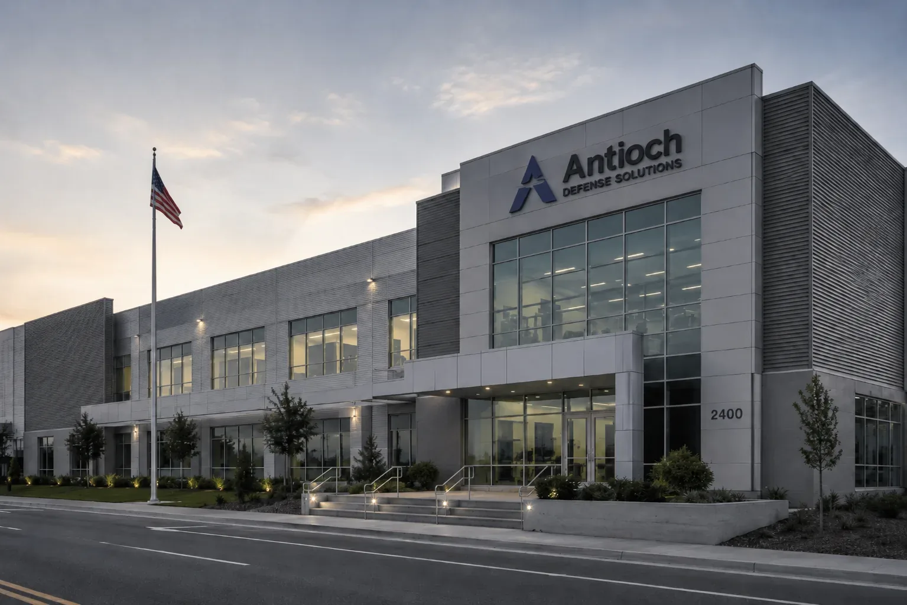

Commercial cloud AI APIs are structurally incompatible with CUI handling requirements and ITAR export controls. Local AI hardware keeps controlled data on servers under your physical security, within your accredited environment, off the internet entirely.
Built by John Dougherty, 25-year enterprise security and technology veteran. Every system is personally assembled, burn-tested for 72 hours, and delivered direct.
Compliance requirements in defense contracting are not suggestions. They are conditions of your contracts, and violations carry real consequences.
When a defense contractor uses a commercial cloud AI service to analyze a proposal, draft technical documentation, or review contract language that involves Controlled Unclassified Information, that data is transmitted to infrastructure the contractor does not control. Under DFARS 252.204-7012, CUI must be processed in environments meeting NIST SP 800-171 security requirements. Most commercial AI API endpoints do not operate on FedRAMP High authorized infrastructure and therefore do not meet this baseline.
The ITAR problem is more acute. ITAR restricts the export of defense articles and technical data to foreign persons and entities. If a cloud AI provider's infrastructure is accessible to foreign nationals - which is the case for virtually all commercial cloud AI services - processing ITAR-controlled technical data through that service may constitute an unauthorized export under 22 CFR 120-130. This is an enforcement risk, not a theoretical concern. A single unauthorized export finding can trigger debarment, criminal penalties, and loss of your facility security clearance. The data left your building the moment you hit send.
CMMC (Cybersecurity Maturity Model Certification) adds another layer. CMMC Level 2 and Level 3 assessments evaluate your organization's security practices across 110+ controls. Routing CUI-adjacent data through commercial cloud AI APIs introduces a processing path that your assessor will scrutinize closely - and that may not survive that scrutiny. Defense contractors face the strictest version of a problem common to all eleven industries we build for - data that cannot leave the building needs AI infrastructure that never asks it to.
Hardware you own, in a facility you control, on a network you secure, disconnectable from the internet entirely.
The server sits in your facility, behind your physical access controls, within your security perimeter. Badge readers, locked rooms, visitor logs, security cameras - your existing physical security infrastructure governs access to the AI hardware.
After initial configuration, the system operates without internet connectivity. Models run locally from NVMe storage. The inference engine and user interface are self-contained. No external connections required for daily operations. Complete network isolation is achievable.
Before delivery, Island Mountain applies a hardened configuration to the OpenWebUI deployment. OFFLINE_MODE, HF_HUB_OFFLINE, ANONYMIZED_TELEMETRY, ENABLE_COMMUNITY_SHARING, and ENABLE_RAG_WEB_SEARCH are all set to their disabled states. The system is tested in this configuration during the 72-hour burn-in.
For CMMC assessors and security auditors: the complete environment variable configuration is inspectable on the delivered system. Your team can verify every setting independently. We provide a configuration manifest documenting the air-gap hardening applied to your specific build.
The system can be placed on a segregated network segment within your CUI enclave. Linux-based operating system supports your existing access control, auditing, and monitoring requirements. Standard network security tools apply.
AI capabilities for defense contractor operational needs, processed entirely on hardware under your control.
Analyze contract requirements, review solicitation documents, compare compliance language, and extract obligations from CUI-marked materials. All processing stays within your controlled environment.
Generate first drafts of technical volumes, past performance narratives, management approaches, and staffing plans. Process proposal content that references controlled programs without transmitting it to cloud services.
Draft technical documentation, engineering reports, test procedures, and program status updates. Llama 4 Scout handles structured technical prose. DeepSeek V4-Flash handles complex analytical tasks and multi-document synthesis.
Analyze FAR/DFARS clauses, compare contract modifications, review compliance requirements, and identify obligations across multiple contract vehicles. Process contract language locally without exposing program details.
Draft System Security Plans, Plan of Action and Milestones documents, incident response procedures, and security policy documentation. Process security-relevant content on segregated, controlled infrastructure.
Draft program status briefings, internal memoranda, subcontractor correspondence, and team communications. Consistent formatting and professional language across all program communications.
CMMC assessments evaluate your overall security posture across 110+ practices derived from NIST SP 800-171. Island Mountain hardware does not carry CMMC certification - no hardware component does. What it provides is infrastructure that supports a cleaner compliance posture than routing CUI-adjacent data through commercial cloud AI APIs.
Access Control (AC): The hardware sits behind your physical and logical access controls. You determine who accesses it, through what authentication mechanisms, from which network segments. Media Protection (MP): AI processing data stays on hardware you own. No data replication to cloud provider infrastructure. System and Communications Protection (SC): Air-gap capability and network segregation prevent unauthorized data egress. Audit and Accountability (AU): Linux-based OS supports the logging and monitoring requirements your CMMC assessor expects.
The compliance advantage of local AI is not that it checks a box. It is that it removes a processing path - cloud AI transmission of controlled data - that creates compliance questions your assessor will ask about. Fewer questionable data flows means a cleaner assessment.
Compliance risk is the cost you can't see on the invoice.
| Commercial Cloud AI | Island Mountain Summit Base | |
|---|---|---|
| CUI Processing | Requires FedRAMP High (most APIs lack this) | On your hardware. Your controls. |
| ITAR Export Risk | Potential unauthorized export | Data never leaves your facility. |
| CMMC Assessment Impact | Introduces questionable data flow | Removes the cloud processing question. |
| Air-Gap Capability | Not possible - requires internet | Fully air-gappable after setup. |
| Physical Security | Cloud provider's data center | Your facility. Your badge readers. |
| Network Segregation | Data traverses public internet | Internal network only. Segregation ready. |
| Compliance Finding Risk | High - cloud AI path invites scrutiny | Lower - data stays in controlled environment. |
| Cost | $2,400 - $24,000/yr + compliance risk | $59,000 - $69,000 one time |
Compliance precision requires honesty about what this hardware is and is not.
Island Mountain hardware does not carry CMMC certification. No hardware component does. CMMC evaluates your organizational security posture, not individual pieces of equipment. The hardware supports a compliant posture - it does not certify one.
This is commercial off-the-shelf hardware. It is not designed for classified networks, SCIFs, or SIPRNet environments. It processes CUI and ITAR-controlled unclassified data on your commercial or CUI-enclave network. Classified processing requires government-furnished equipment and accredited facilities.
Island Mountain hardware does not integrate with government-furnished equipment, government networks, or government information systems. It is a standalone commercial AI system for your internal use within your contractor facility.
After the 30-day support period, your IT security team is responsible for system hardening, patching, monitoring, and incident response. The system runs Linux and responds to the same security management practices you apply to other systems in your CUI enclave.
Important Compliance Notice
Island Mountain is not a compliance attorney, CMMC assessor, or C3PAO. CUI handling requirements are complex and fact-specific. ITAR export control determinations depend on the specific data, the specific cloud infrastructure, and the specific contractual requirements involved. Do not make infrastructure decisions based solely on the information on this page. Consult your compliance officer, export control counsel, or a CMMC C3PAO before making changes to your data processing architecture based on compliance requirements.
Island Mountain is a hardware company, not a compliance authority. References to ITAR, CUI, CMMC, DFARS, or NIST SP 800-171 on this page reflect factual descriptions of data handling mechanics - not legal, regulatory, or compliance advice. Consult qualified counsel for compliance determinations specific to your organization and contract requirements.
Power & Installation: All Island Mountain systems require a dedicated 208V/30A power circuit (NEMA L6-30R). Defense contractor facilities with existing server rooms typically have this infrastructure. The system fits in a standard 4U rack space. Average power draw under typical inference loads is 1.5-2.5 kW. 30 days of remote setup support are included, and we coordinate with your IT security team for network segregation and access control configuration.
No. Commercial cloud AI APIs are generally incompatible with CUI handling requirements under DFARS 252.204-7012. CUI must be processed in environments meeting NIST SP 800-171 security requirements - most commercial AI endpoints do not operate on FedRAMP High authorized infrastructure. On-premises AI hardware from Island Mountain processes CUI-adjacent documents under your own security controls.
Yes. If a cloud AI provider's infrastructure is accessible to foreign nationals or located outside the United States, processing ITAR-controlled technical data constitutes potential unauthorized export under 22 CFR 120-130. On-premises Island Mountain hardware under your physical access controls eliminates this export control concern entirely. Consult your export compliance officer for fact-specific guidance.
Island Mountain hardware is commercial off-the-shelf AI infrastructure - it does not carry CMMC certification itself. However, on-premises hardware under your physical and logical access controls directly supports CMMC Level 2 practices for access control, media protection, and system/communications protection. Air-gap capability and network segregation satisfy the most restrictive NIST SP 800-171 controls.
Yes. All models are pre-loaded on local NVMe drives before delivery. The inference engine and OpenWebUI interface run entirely locally - zero external network connectivity required for daily operations. Model updates in air-gapped environments use approved removable media transfer. Designed for environments where DFARS, CMMC, and ITAR require complete network isolation.
Related: Can Defense Contractors Use AI with ITAR Data? | Air-Gapped AI Inference
Defense subcontractor processing CUI for a DoD program. Air-gapped inference on RTX PRO 6000 Blackwell GPUs. Zero cloud dependency. CMMC audit-ready from deployment day.
Scenario: CMMC Level 1 FacilityITAR-regulated manufacturer using AI for technical documentation. Export-controlled data on a cloud provider's infrastructure was a non-starter.
Scenario: Defense ManufacturerSmall defense sub processing DFARS-covered technical data. We needed AI assistance without adding a cloud provider to our supply chain risk.
Scenario: Defense SubcontractorNo sales pitch. Describe your compliance requirements and we will spec an ITAR-ready system.
One conversation. No sales pitch. Tell us about your compliance requirements and operational needs, and we will spec the right system for your facility.
Or call directly: 1-341-441-8740
See all eleven industries we serve or explore: Law Firms · Research Labs